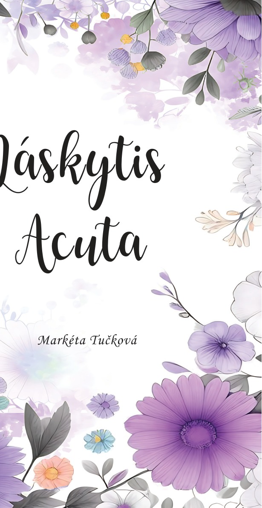

Román Markéty Tučkové
Láskytis
Acuta
O lásce, rozhodnutích a osudu
Příběh mladé zdravotní sestry Kláry, která se ocitá na křižovatce citů, životních rozhodnutí a osudových okamžiků.
Objevte příběh
O knize
Když láska změní pravidla
Klára, mladá empatická zdravotní sestra, překročí hranici svých morálních zásad a zaplete se do milostného trojúhelníku.
Jsou její rozhodnutí správná? Zavede ji osud do náruče pravé lásky, nebo jí teprve velká životní ztráta ukáže, že se její osudový muž skrývá v někom jiném?
Jak moc nás ovlivňují osudové okamžiky a nakolik si zásadní události do života přitahujeme sami?
Autorka
Markéta Tučková
Seznamte se s autorkou románu Láskytis Acuta.
Fotografii a osobní představení autorky zde brzy doplníme.
Připravujeme
Pomozte příběhu na svět
Pro vydání knihy připravujeme možnost podpory prostřednictvím platformy Donio.
Odkaz na sbírku brzy zveřejníme